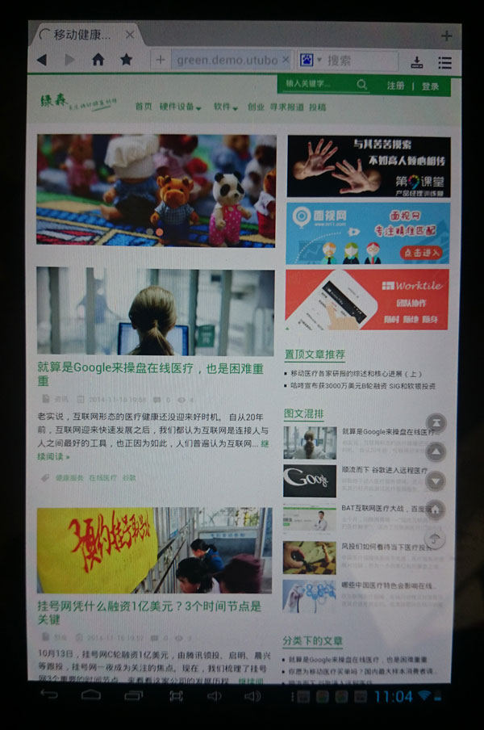

现在的网站没有响应式设计都显得档次很low，所以主题已经为你做了响应式设计。目前仅支持安卓，ios和win的移动设备还没有测试（屌丝没钱，买不起苹果机）。
你可以在后台控制响应式触发的屏幕宽度，如下图：
我已经让这个功能达到了非常高的可控程度，已经可以区分pad和phone了。
由于网络原因Gavatar的头像一直没有加载出来

Pad上的首页和列表页为了呈现更多的内容，边栏没有隐藏，而且为了凸显出文章的可读性，把缩略变为通栏显示在文章标题上方，显得大气稳重又具有亲和力。Pad上空间有限，但我尽可能的保留了PC端所能看到的东西。
Pad上查看文章内容，凸显了内容的重要性，因此把边栏去掉，用一列展示文章内容，让读者阅读非常流畅。
手机上采用非常流行的卡片式列表，每一篇文章是一个小卡片，这是目前国内资讯APP最流行的设计模式，我们通过css控制其显示的效果非常美观。
手机上的内页和pad上的内页类似，都具有评论功能。
手机上加入了响应式的菜单列表，在网页顶部的右上角有一个触发菜单的按钮，展开后可以搜索和选择进入不同的菜单，而且在后台还可以控制部分菜单在手机上不显示。